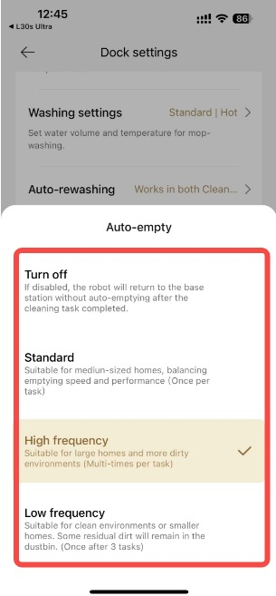
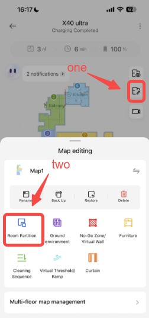
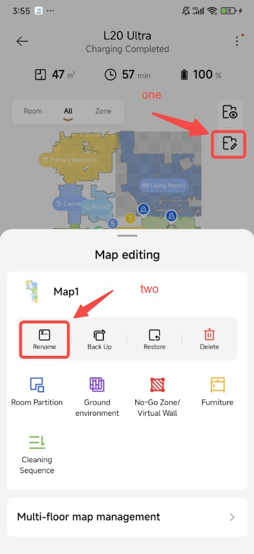

从拆箱到第一张地图：DREAME 扫地机完整配网建图实操
跟着做一遍 DREAME 扫地机从 WiFi 配网、地图扫描到房间命名的全流程，避开双频路由、权限限制这些新手高频坑，半小时搞定自动化清扫的全部基础。
这篇教程带你从零把 DREAME官网 扫地机真正用起来——不是简单开机充电，而是完成配网、扫描建图、房间命名三件事。做完这三件，你就能给每个房间设置清扫顺序、预约时间、甚至语音控制某间房单独扫，自动化清扫的架子算是搭起来了。
准备工作：先把这三件事搞定
动手之前花五分钟确认一下，能省后面半小时的排查时间。
设备和手机：DREAME 主机一台、基站一个、充电线一根，手机一台（iOS 或 Android 都可以，从 下载 页或应用商店搜 DREAME 装官方 App）。主机底部和基站背面的铭牌留着——配网时要对着设备型号看。
路由器：这是新手翻车率最高的环节。先看手机 WiFi 列表，你家是两个名字（比如 home 和 home-5G）还是一个名字？DREAME 只认 2.4GHz 频段——如果路由器把双频合成一个名称，先去路由器后台关掉合并，让 2.4G 和 5G 各走各的名。不知道怎么进后台？浏览器地址栏输机身贴纸上的 IP，密码也在贴纸上。
App 账号：装完 App 先注册登录，登录时国家/地区选对——选错了会导致后面云连接不上。注册完先别急着添加设备，等主机充上电再开 App 走配网流程。
第一步：主机回桩充电，开机就绪
新机器拆箱后主机一般是低电量状态，直接手动推到基站上也能充，但更稳的做法是：基站插电 → 主机开机 → 长按主机顶部按键让它自动回桩。充到电量指示灯常亮（大概 30 分钟起步）再开始配网——低电量配到一半断电是常有的事。

充电间隙可以打开 App 点「添加设备」，提前在列表里找到你的型号（L20 / L30 / X30 / X40 系列各自图标不一样）。
第二步：WiFi 配网——只有 2.4G 能连上
配网的核心逻辑就一条：手机连哪个 WiFi，就把哪个 WiFi 的信息传给主机。所以在 App 开始配网之前，确保手机连着的是你家的 2.4G 热点——名字里不带「5G」字样的那个。
具体步骤：
- 主机电量充足后，长按主机按键进入配网模式（指示灯闪）。
- App 里点「添加设备」→ 找到对应型号 → 选择当前 2.4G WiFi → 输入密码。
- App 弹出权限请求时全部允许——特别是定位和蓝牙权限，配网阶段需要。
- 接下来两分钟左右，App 会自动发现附近的 DREAME 设备、下发 WiFi 密码、等待主机回复成功。
这里注意一个细节：如果你之前改过 WiFi 密码，或者换过路由器，App 里记住的密码还是旧的。配网失败后第一检查项是「手机当前连的 WiFi 密码有没有和路由器一致」——不是 App 里存的那个，是路由器实际在用的那个。
第三步：自动扫描，建立第一张地图
配网成功后 App 会自动提示「开始建图」，按提示把主机放回基站，确保它周围一米内没有大件家具遮挡，然后点「开始」。主机会以基站为圆心向外扫描一圈，期间会绕着房间走——别碰它，也别关门关窗，让它完整走一遍。
扫描速度取决于房子大小，两居室一般 5~8 分钟，大户型或复式需要 15 分钟以上。扫描过程中 App 里能实时看到轮廓逐渐出现，从一团模糊到清晰的房间边界。
扫描完成后主机会自动回桩充电，App 弹出「地图已创建」的提示。这时候别直接设置清扫——先做第四步的房间命名，后面所有自动化设置都依赖这些名字。
第四步：房间重命名，给自动化打标签
刚建完图的默认名称是「房间一、房间二」，一周后你自己都分不清哪个是哪个。DREAME文档 里专门把重命名写成独立教程，说明这是高频刚需。
命名操作藏在地图编辑器里：打开 App → 进入设备卡片 → 点「地图编辑」→ 选择「房间分区」工具 → 在房间列表里选中要改的房间 → 点「重命名」输入新名字。

命名就用最朴素的叫法：客厅、主卧、次卧、书房、厨房、阳台——这些名字后面会出现在清扫顺序、预约设置、甚至语音指令里。我见过有人把次卧叫「客房」、书房叫「老王的游戏间」，半年后切换清扫顺序时逐个查房间号，悔不当初。
还有个容易忽略的权限细节：房间重命名只有主账号有权限。如果你把设备共享给家人，他们能启动清扫、能看地图，但改不了房间名——不是操作错了，是权限本来就没开放。

如果是复式或别墅，每层楼一张地图。这种情况用「多楼层地图管理」里改名字更方便——左右滑动切换楼层，每层统一命名规则如「一楼」「二楼」，不会拿错。
三个新手最容易翻车的卡点
卡点一：配网始终报连接失败
90% 的情况是手机连了 5GHz 热点。确认方法：手机设置里看当前 WiFi 名称，有没有「5G」「5GHz」「G5」之类的后缀？有就换。如果路由器是双频合一（只有一个名字），进后台关掉合并——具体菜单因品牌而异，搜「你的路由器品牌 + 双频合一」就能找到步骤。
卡点二：地图扫出来有大片空白
扫描的时候主机被遮挡物堵了——比如门没开、大型绿植挡住去路、或者基站放在了角落里。重新扫描前先把主机和基站移到开阔处，确保它能看到房间的四个角。多楼层的话别指望一张地图扫完所有层——每层单独建图，App 支持多楼层地图切换。
卡点三：共享用户改不了房间名
不是 bug，是设计限制。只有注册设备的主账号拥有房间编辑权限。如果需要家人一起设置，把主账号密码告诉他们或者让他们用主账号登录 App——共享账号只能操作清扫任务和查看状态，改不了地图结构。
做好这一步，后面就顺了
配网、建图、命名三件事完成后，你已经搭好了 DREAME 自动化清扫的全部骨架。接下来可以设置清扫顺序（比如先扫厨房再扫卧室，避免油烟带过去）、给特定房间设置禁止清扫区、甚至接入语音助手一句话让它去扫主卧。
官方对这款设备的定位是「全屋智能清洁节点」——这些听起来虚的功能，基础全在这三步里。命名偷懒用默认值、配网凑合用 5G、建图时懒得挪基站，后面每一步都要返工。